Jayanti Rath
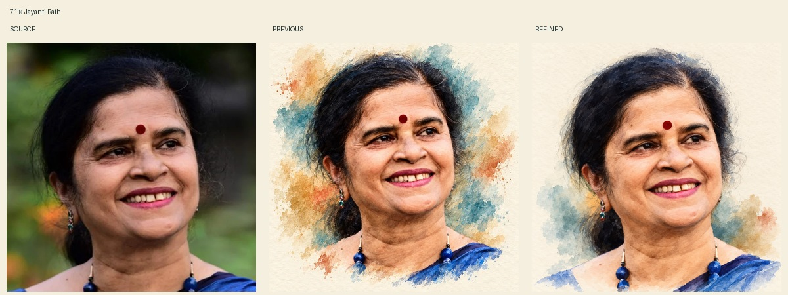
Source smile, head tilt, bindi, earrings and necklace retained. Broad watercolor modeling reduces the prior etched cheek/neck texture; natural age lines remain. Face still interpreted; independent likeness review pending.
Original photograph · previous watercolor · source-led Human Natural refinement. Same-assistant visual review; independent likeness review pending. Prior artwork preserved.

Source smile, head tilt, bindi, earrings and necklace retained. Broad watercolor modeling reduces the prior etched cheek/neck texture; natural age lines remain. Face still interpreted; independent likeness review pending.
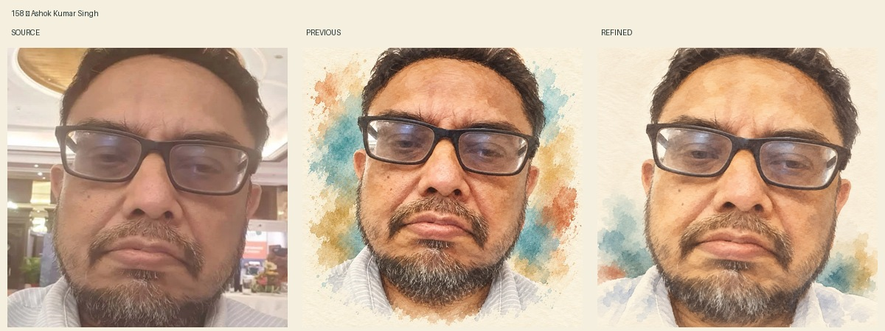
Tight selfie crop, glasses and source reflections, downturned mouth and beard outline retained. Painted beard/skin masses replace the earlier uniformly etched surface; selective hair strokes remain. Source haze and fine-detail uncertainty remain; independent likeness review pending.
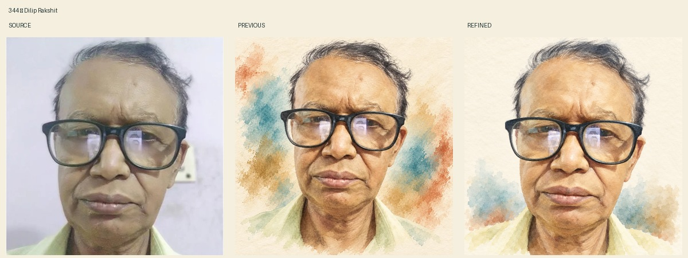
Oversized glasses with original phone reflections, broad forehead, wispy hair and closed mouth retained. Broad washes soften the previous engraved forehead/neck lines while retaining actual age and facial asymmetry. No hidden eye detail intentionally recovered; independent likeness review pending.
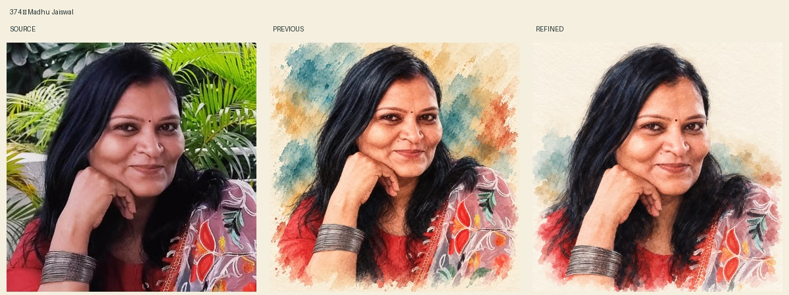
Original hand-to-chin overlap, closed smile, nose stud, clothing pattern and bangles remain recognizable. Broad painted cheeks and hair masses reduce the previous etched detail; visible bracelets are retained without adding a new accessory. Independent likeness review pending.
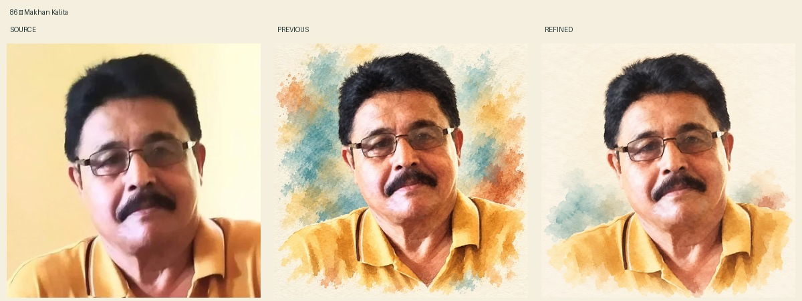
Source tilt, thick moustache, glasses reflections, yellow polo and unequal indoor light retained. Softer painted skin/hair replaces extra stubble-like grain in earlier version. No new accessory or material geometry change seen in source comparison; independent likeness review pending.
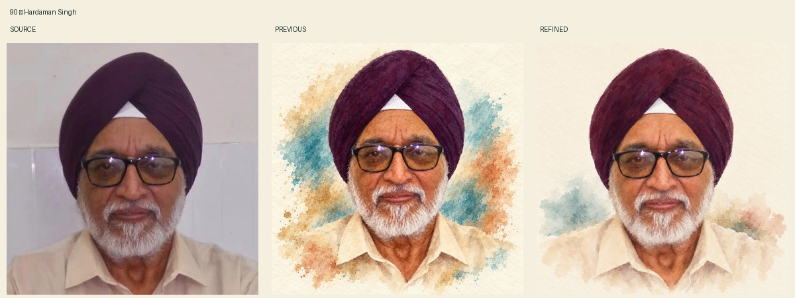
Source turban shape, triangular white inset, glasses reflections, closed mouth and beard outline retained. Face uses softer paint planes and restrained source-supported creases; beard remains selectively defined but less etched than the previous version. Selected after visual likeness comparison.
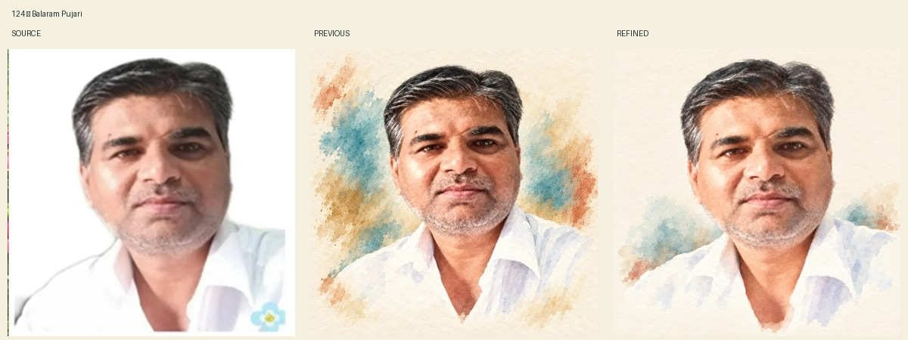
Broad face, hair part and grey pattern, brow asymmetry, neutral closed lips and white open collar retained. Painted blocks replace prior fine stubble and sharp skin grain; background substantially quieter. Close crop follows original. Selected after comparing source, prior and candidate; minor facial detail remains an interpretation.
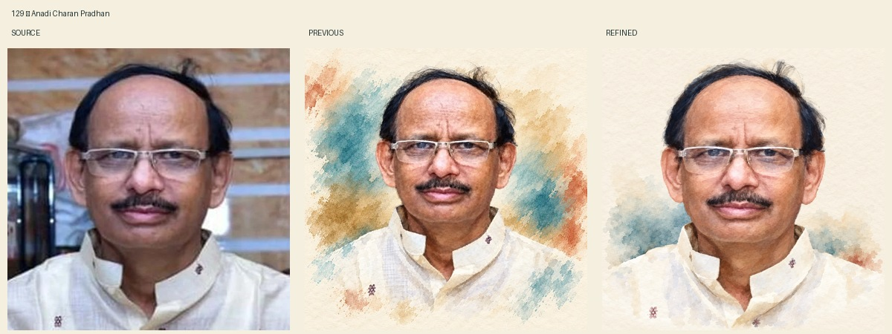
Receding dark hair, tall forehead and actual central furrow, thin rectangular glasses, moustache, neutral closed lips and embroidered cream collar retained. Forehead and cheek planes are softer and background quieter than prior fine-grained treatment. Source likeness remains recognizable; independent review pending.
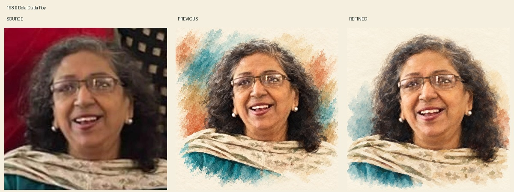
Candid open smile, glasses glare, greying hair, earrings and patterned shawl over turquoise clothing retained. Teeth painted largely as a joined light shape, cheek detail softened and background quieter than previous. Visible smile and head angle remain source-consistent; fine dental likeness is not certified.
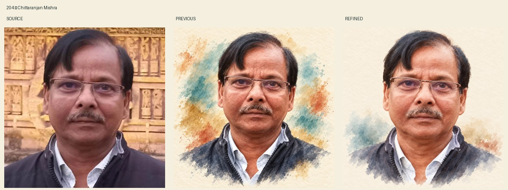
Side-swept hair fringe, thin glasses, under-eye shape, grey moustache, closed neutral mouth and dark zip jacket over white shirt retained. Broad watercolor modeling and quieter shoulder washes reduce prior engraved skin detail; actual age lines remain. Source compared; independent likeness review pending.
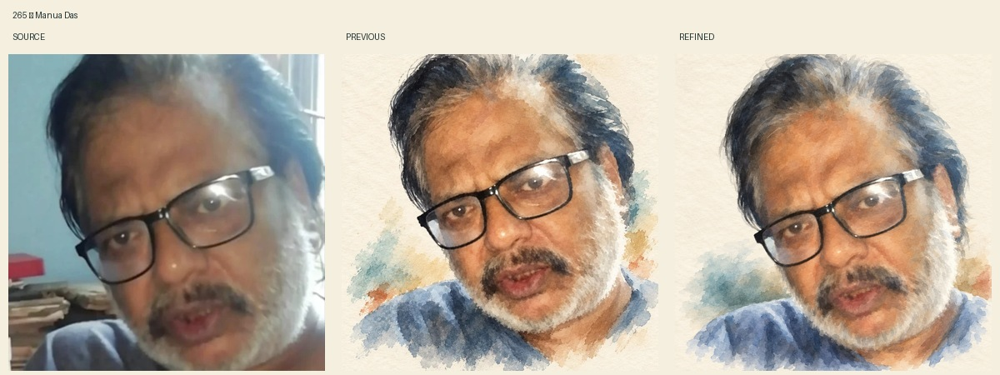
Tilted close selfie, black glasses and window glare, grey hair/beard and blue shirt retained. Mouth is softly unresolved without newly painted individual teeth; beard uses broad masses instead of fine filaments. Reduced precision is better suited to the hazy source. Source/previous/candidate compared; independent likeness review pending.
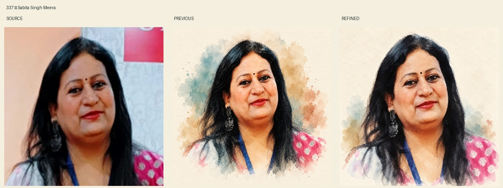
Head angle, bindi, long dark hair, visible dark earrings, closed red lips and pink/grey clothing with blue strap retained. Broader hair and cheek paint planes and restrained shoulder washes reduce prior fine decorative detail. Source/previous/candidate compared; likeness remains recognizable and independent review pending.
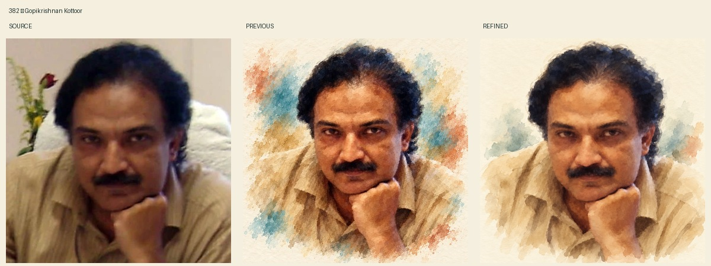
Version 3 selected after rejecting version 2 for enlarged bright eye detail. Shaded brow and smaller softer eyes, closed mouth, moustache, forward lean, chin/fist overlap and beige collar remain source-consistent. Broad low-contrast face and hand paint reduce prior etched definition. The low-resolution photograph still limits exact eye and hand likeness; independent review pending.